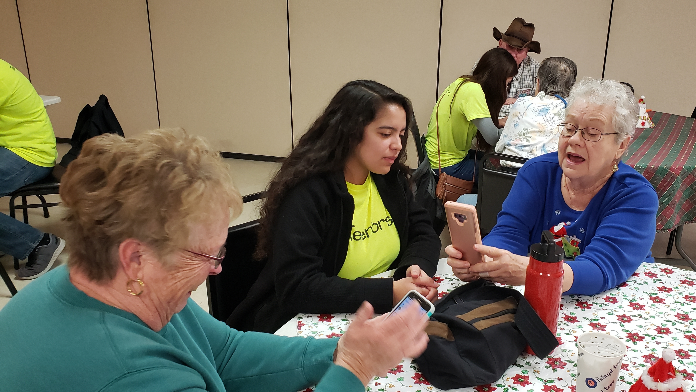

Community Highlight: The Significant Projects of Harmony Hub
Discover the core of Harmony Hub's community-oriented initiatives, Dec 19, 2024

The successful initiatives of Harmony Hub provide as evidence for the idea that technology, when
used for charitable endeavors,
may change people's lives. Come along on this path of good
transformation, where every project represents a step toward a society
that is more connected
and harmonious.
Watch this space for additional information about our upcoming and current initiatives.
By working together,
we can make a significant difference and establish a community that values
peace and harmony.
Generations Connect: Intergenerational Programs
Cooperative initiatives help close the generational divide by promoting relationships amongst various age groups, Dec 28, 2024

Bridge the generation gap with our intergenerational programs at Harmony Hub. From technology mentoring to collaborative projects,
these initiatives foster connections between different age groups. Experience the joy of shared learning and community building.
Within the vibrant fabric of communal life, Harmony Hub takes great pleasure in its dedication to creating connections between generations.
Our Intergenerational Programs are evidence of our conviction that encouraging relationships between various age groups not only
improves lives but also builds a peaceful and advantageous community. Come along on a journey where wisdom and technology
collide and generations meaningfully interact.